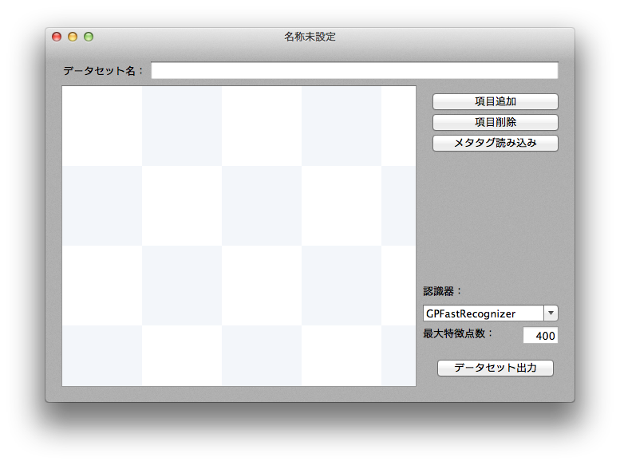
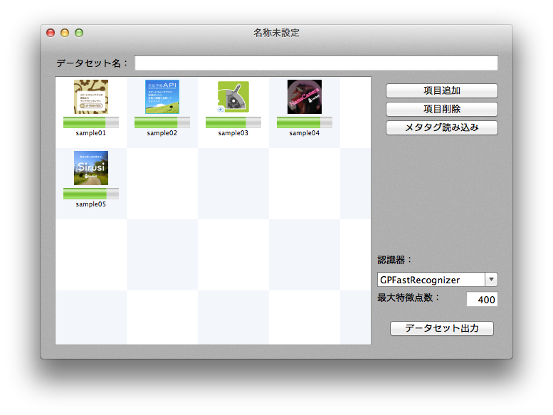
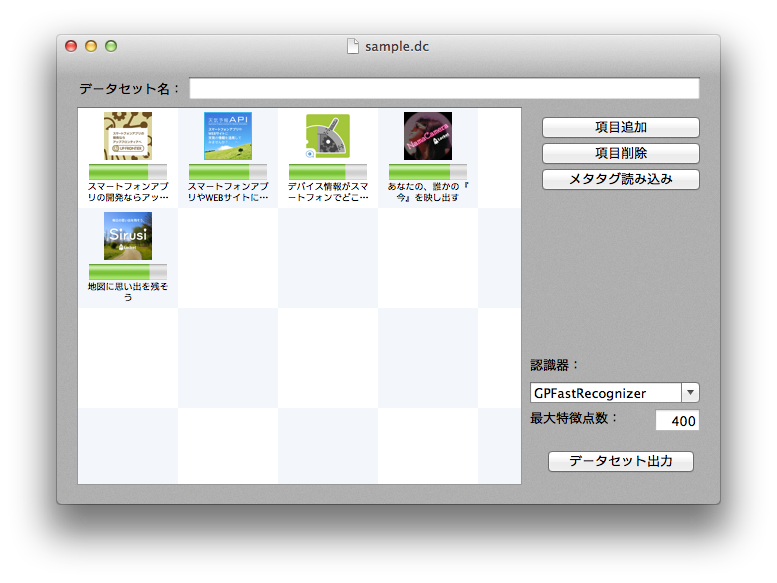
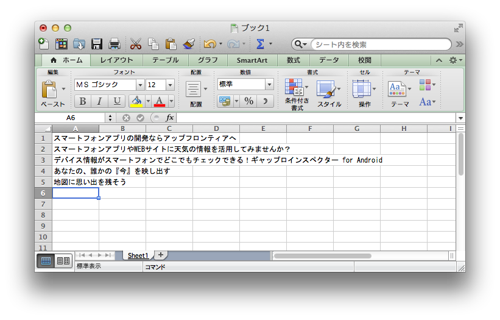
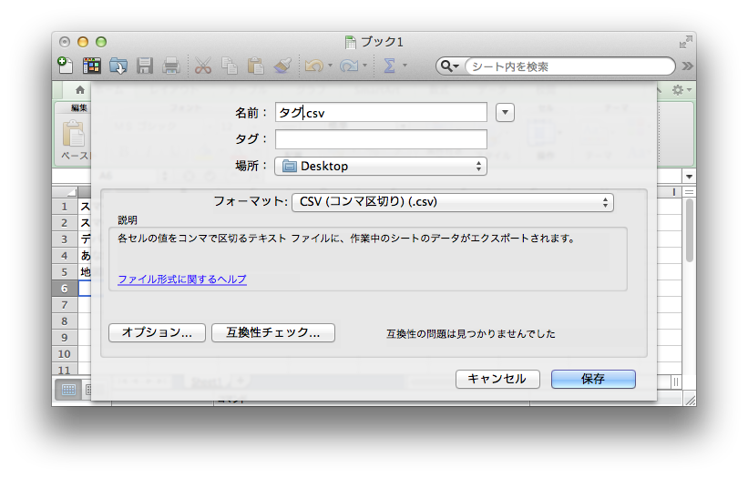

ファイル -> 新規作成(⌘N)より、新規ドキュメントを作成する。 
ドキュメントウィンドウ内の「項目追加」ボタンから、もしくは登録画像テーブルに直接画像をドラッグアンドドロップして画像を登録する。
※登録する画像は300x300以上の解像度で不透明、かつ辞書画像としてのスコア(以下のスクリーンショットに見られる緑のゲージ)が緑であることを強く推奨します。

画像の下に表示されているタグ(デフォルトはファイル名)を編集する。
※ここで設定した文字列が、プログラム内での識別子になります。

また設定するタグが非常に多い場合や、既に別のテーブルで管理している場合などは、メタタグ読み込みボタンより、CVSファイルの読み込みが行えます。 例えば、以下の様なCSVファイルを読み込むと、上記の方法で入力した場合と同じ結果を得ることができます。  
読み込むファイルは以下のフォーマットに従う必要があります。
文字コード：UTF-8
タグごとにカンマ(,)もしくは改行(CR or LF)で区切られている。
任意で、データセット名欄にデータセット名を入力する。(複数のデータセットを切り替えて利用する場合などに利用できます。)
※ここで設定した文字列が、プログラム内での識別子になります。
以下の説明を参考に認識器を選択、また最大特徴点数を設定します。
| 認識器 | 説明 |
|---|---|
| GPFastRecognizer | 高速な認識器です。トレードオフとして誤認識を起こしやすい傾向があります。多数の辞書画像を用いたい場合、または誤認識を許容するシステムなどで利用できます。 |
| GPFineRecognizer | 高精度な認識機です。トレードオフとして認識により時間が掛かる傾向があります。極小数の辞書画像、かつ誤認識を許容したくないシステムなどで利用できます。 |
最大特徴点数は、出力されるデータセットのデータサイズが大きい場合や、認識にかかる時間が大きい場合に小さくします。ただしトレードオフとして誤認識率が高くなります。
ウィンドウ右下の「データセット出力」ボタンを押して、データセットを出力します。出力には数分かかる場合があります。また、出力されるファイルは選択した認識器に応じて変わります。
| 認識器 | 出力ファイル |
|---|---|
| GPFastRecognizer | descファイル |
| GPFineRecognizer | binファイル, yamlファイル |
※ライブラリから利用する際に、それぞれの出力ファイル全てが必要になります。(例：GPFastRecognizerならdescファイル。GPFineRecognizerならbinファイルとyamlファイル。)
ファイル -> 保存(⌘S)より、現在作業中のドキュメントを保存することができます。再度データセットを出力しなおす際を考えて保存しておくことを推奨します。ドキュメントは「dc」という拡張子で保存されます。